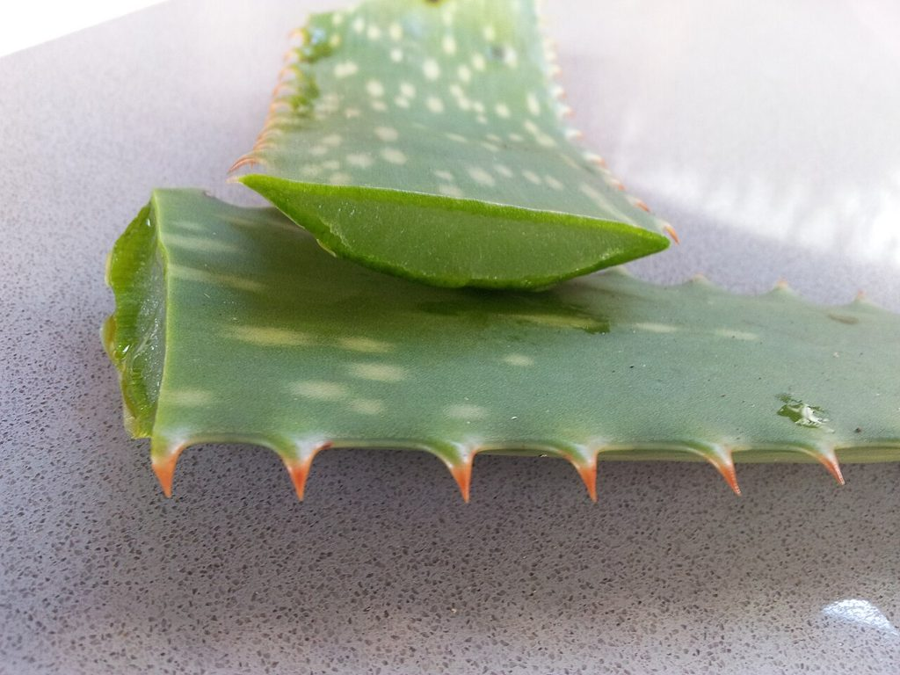

Cikk · Aloe vera
Aloe vera és bőr: égésre van jel, de ne kend rá mindenre
Biztos neked is van egy ismerősöd, akinek az ablakában ott áll egy aloe, és ha valaki megégeti a kezét a sütőnél, már töri is le a levelét. Én is így nőttem fel. Most utánanéztem, mit tud erről a tudomány. A rövid válasz: égésre van némi jel, de ne kend rá mindenre, és főleg ne idd meg bármilyen formában.

Mi az az aloe, és mire árulják?
Az aloe kaktuszra emlékeztető, forró és száraz vidéken élő növény. Már az ókori görögök, rómaiak és kínaiak is használták, főleg bőrbajokra és sebekre. Ma bőrre kenve pattanásra, pikkelysömörre, égésre és sugárkezelés utáni bőrpanaszokra ajánlják, szájon át pedig fogyásra, cukorbetegségre és bélgyulladásra.
Fontos tudnod, hogy a levélnek több része van. Belül van az átlátszó gél, a külső réteg alatt pedig egy sárgás, keserű nedv, a latex. A termékek ezekből vagy az egész összezúzott levélből készülnek, és a kettő nagyon nem ugyanaz. Átolvastam az amerikai NIH komplementer és integratív egészségügyi központjának (NCCIH) aloéról szóló lapját, amelyet 2025 februárjában frissítettek.
Mit mond a NIH a bőrről?
Amit a lap ír Klinikai kutatások szerint a bőrre kent aloe gél talán gyorsíthatja az égési sérülés gyógyulását, és csökkentheti az égés okozta fájdalmat. Két kis vizsgálat alapján más kezelés mellett a pattanásokon is javíthat.
Amire kevés az adat Kevés kutatás szól arról, hogy segíthet-e pikkelysömörben, herpeszben vagy sugárkezelés utáni bőrkárosodásban. Ekcémára, cukorbeteg lábsebre vagy irritábilis bélre a lap szerint nincs elég megbízható adat ahhoz, hogy bármit mondjunk.
Amire figyelj
A bőrre kent gélt a legtöbben jól tűrik, de előfordult már tőle égő érzés, viszketés, kiütés és ekcéma. Szájon át más a helyzet. A latex hasfájást, görcsöt és hasmenést okozhat, ezért az amerikai gyógyszerhatóság 2002-ben ki is vetette a recept nélküli hashajtókból. A levélkivonatok szedésénél hirtelen kialakuló májgyulladásos esetekről is beszámoltak, a nemzetközi rákkutató ügynökség pedig a színtelenítés nélküli teljes levélkivonatot lehetséges rákkeltőnek sorolta be.
Ha szívgyógyszert, például digoxint szedsz, vagy terhes vagy, esetleg szoptatsz, szájon át ne használd orvosi egyeztetés nélkül.
Szerintem egy kisebb konyhai égésre nyugodtan kenhetsz aloe gélt, ha jólesik, miután hideg vízzel lehűtötted. De ha az égés hólyagos, nagy, az arcodon van, vagy pár nap alatt nem javul, az már orvosi kérdés. Az aloés italokkal pedig én óvatos lennék.
Források
- National Center for Complementary and Integrative Health, NIH. Aloe Vera: Usefulness and Safety. Frissítve: 2025. február. https://www.nccih.nih.gov/health/aloe-vera
- Dat AD, Poon F, Pham KB, Doust J. Aloe vera for treating acute and chronic wounds. Cochrane Database Syst Rev. 2012;(2):CD008762. https://doi.org/10.1002/14651858.CD008762.pub2 · PubMed 22336851